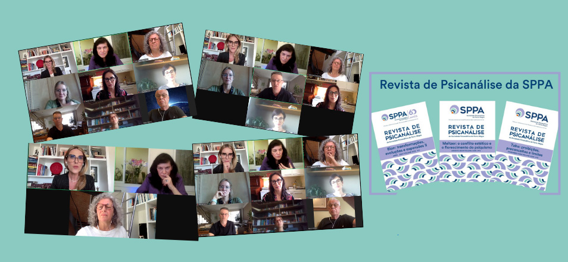

Em sintonia com o nosso tempo
- 
 Buscamos ser contemporâneos, mantendo nossas referências e pensamento psicanalítico, mas com abertura e diálogo com o novo
Buscamos ser contemporâneos, mantendo nossas referências e pensamento psicanalítico, mas com abertura e diálogo com o novo
O compromisso científico da Revista de Psicanálise da SPPA com a atualização, profundidade e fundamentação dos artigos publicados tem revelado como o pensamento psicanalítico pode estar inserido na contemporaneidade.
No ano de 2024, a publicação de três números temáticos revela a riqueza das ideias de importantes teóricos da psicanálise, através de artigos de autores que ampliam, discutem e, em especial, atualizam suas contribuições.
Bion: transformações, evoluções e expansões II traz de forma vívida a relevância das ideias de Bion para a atualidade. Este autor nos brindou com uma teoria que possibilita o acesso às profundezas da mente humana, nas quais catástrofes impensáveis podem ser experienciadas e quiçá elaboradas, revelando a esperança de transformação e modificação de contextos onde o desligado, a destrutividade, o traumático imobilizam e corroem.
Previsto para agosto de 2024, Meltzer - O conflito estético e o florescimento do psiquismo aborda a importância do conflito estético para que psiquismo floresça, ou seja, desenvolva-se com recursos simbólicos e capacidade de transformações. Aborda também os efeitos e consequências de vivências que dificultariam este florescer. Assim, a reflexão amplia-se para atualidade dos transbordamentos – mídia, guerras, desastres ambientais como a recente enchente de maio de 2024 no RS – enfatizando as consequências de catástrofes emocionais tanto para o indivíduo, como no encontro analítico. “Quando nossos próprios objetos internos são mobilizados em sua capacidade de seguir acreditando na beleza da vida, precisamos retomar a esperança no encontro de duas mentes que podem trabalhar de forma criativa”, lembra a editora-chefe da Revista de Psicanálise, Ana Cristina Pandolfo.
O último número de 2024, previsto para dezembro, Tabu: proibições, preconceitos e limites, retoma o texto freudiano de 1912 e questiona se ainda existiriam tabus, proibições, preconceitos e limites, inclusive na própria Psicanálise. O “sentimento generalizado de que as configurações do tempo têm privilegiado o imediatismo, a liquidez e ‘cancelamentos’ nas relações e escolhas de vida, a incapacidade de enlutar, o hedonismo, o individualismo no mundo interconectado...” Este número indaga quais novos tabus estariam sendo produzidos numa época em que o exibicionismo tudo mostra, ao contrário de tabu, que diz respeito ao proibido.
Outra realização da Revista será a atividade com a presença já confirmada de Ofra Eshel, autora de A virada para a intuição: do saber e o sonhar ao tornar-se in-tu-it (referência), em 26 de outubro. Nossa convidada é doutora em Psicologia, supervisora e psicanalista da Sociedade Psicanalítica de Israel, membro da Associação Psicanalítica Internacional (IPA), membro honorário do New Center for Psychoanalysis (NCP) Los Angeles e foi vice-presidenta da International Winnicott Association. Será uma oportunidade de conversar com a autora sobre suas ideias, influências e perspectivas para a Psicanálise.
“Transformar vivências emocionais em artigos científicos é sempre um desafio. Nosso trabalho editorial prioriza o pensar junto com os autores e assim servir como um meio facilitador, no sentido winnicottiano. Almejamos publicações nas quais o conhecimento psicanalítico seja transmitido de forma ética, profunda e científica. Produzimos uma Revista em sintonia psicanalítica com nosso tempo. As seções Temas Diversos e Psicanálise em Diálogo oferecem espaço para a interlocução com a cultura e outras áreas do conhecimento que nos atravessam. Buscamos ser contemporâneos, mantendo nossas referências e pensamento psicanalítico, mas com abertura e diálogo com o novo!”, enfatiza Ana Cristina Pandolfo.
Visite o site:
Assine a Revista de Psicanálise da SPPA!